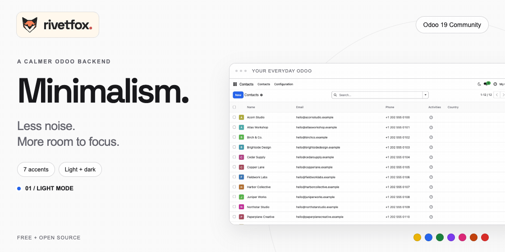
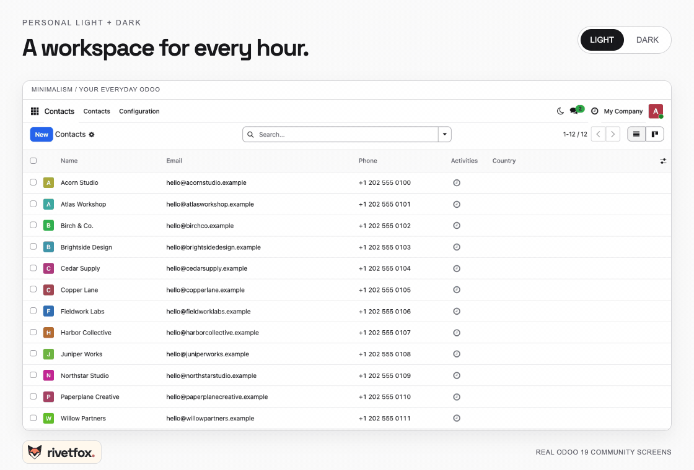
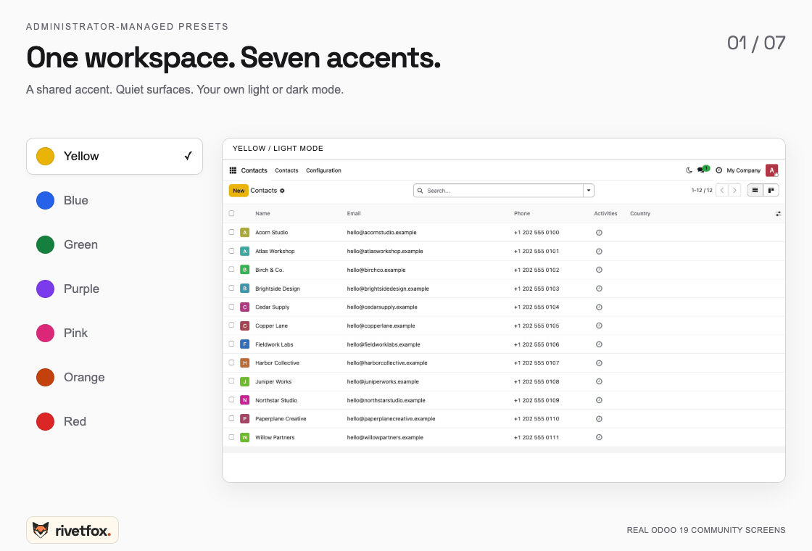
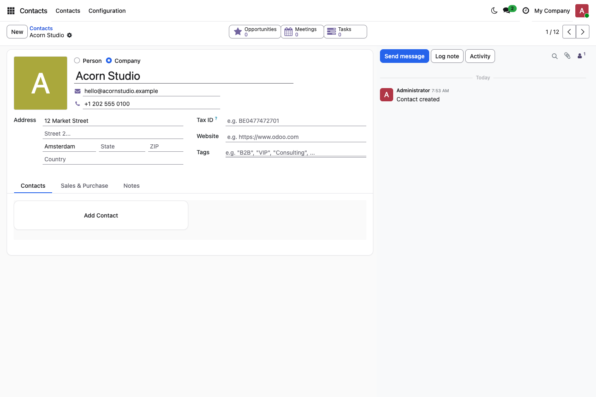
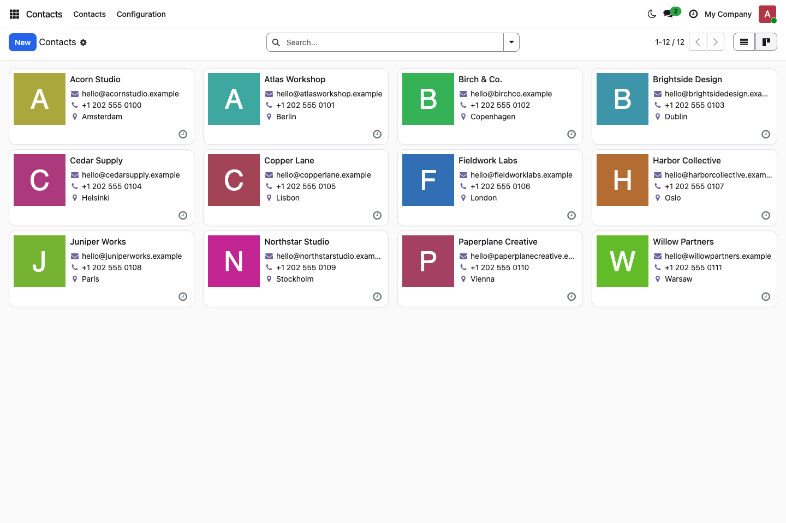
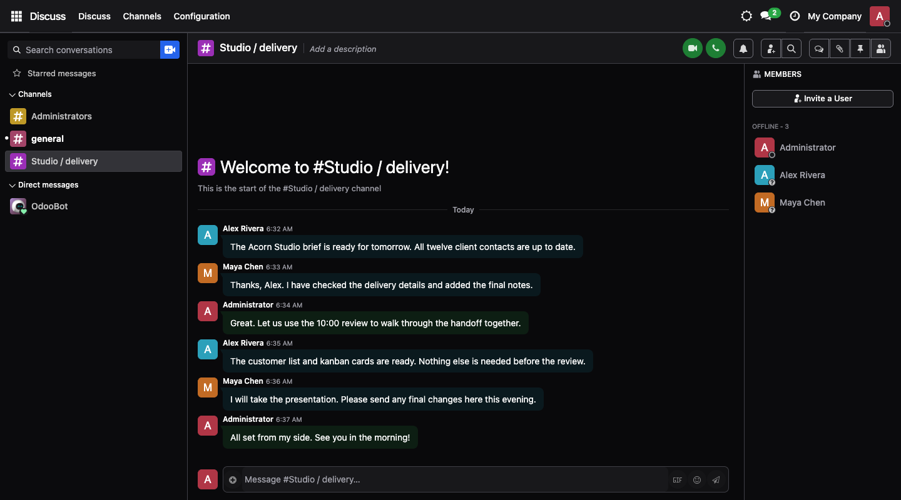
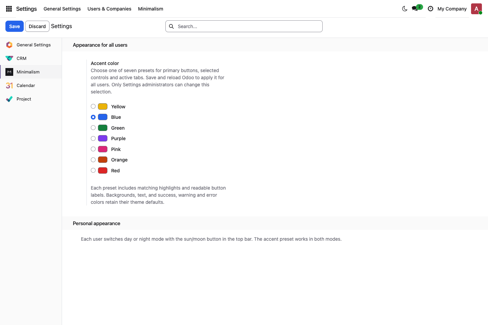
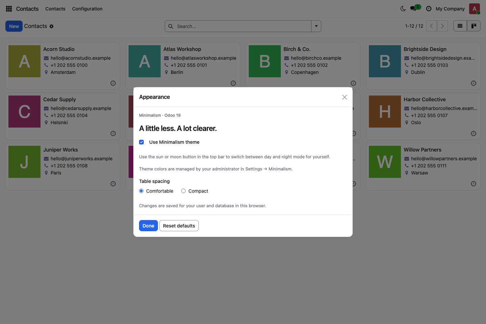

Minimalism brings neutral surfaces, fine borders and thoughtful spacing to Odoo 19 Community. A shadcn/ui-inspired design, built around the Odoo screens you already know.
Switch from the top bar. Your open forms, current view and message drafts stay intact.
Seven presets managed by Settings administrators. Calm surfaces in every palette.
Odoo views, menus and permissions. No external fonts, services or frontend framework.
Every internal user gets a sun/moon switch. Avatar → Appearance also offers comfortable or compact table spacing, theme enablement and reset. Mode changes do not reload the page.

Choose Yellow, Blue, Green, Purple, Pink, Orange or Red under Settings → Minimalism. Save and reload open sessions to apply the shared database-wide preset. Success, warning and error colors retain their meaning.

Forms, lists and kanban keep their native behavior. Fine borders and quieter surfaces help the information stand out.


Native dark components support Discuss, Calendar, CRM, Project and standard graph/pivot views. Chart labels update when you change mode.

Settings administrators control the accent under Settings → Minimalism.

Each user controls their mode, spacing and theme enablement.

Requires only web and base_setup. Screenshots use optional applications and fictional records; the theme does not install those apps or records.
For self-hosted Odoo 19 Community backend. Website, portal, POS, login and PDF reports are outside scope. Install the matching version branch. Enterprise, Odoo.sh, Studio, specialized editors, spreadsheets, RTL and other backend themes are unverified. Odoo Online cannot install filesystem add-ons.
Preferences stay in browser storage, isolated by origin, database and user. Same-user tabs synchronize; devices do not. If storage is blocked, changes last for the current page. Disabling restores the original Odoo appearance. A failed stylesheet load keeps the previous appearance usable and permits retry.
Developed by RivetFox. LGPL-3.0-or-later. Included notices credit the shadcn/ui design reference and reused RivetFox foundation. Animated comparisons are composed from real Odoo screenshots.